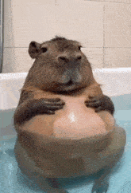
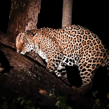
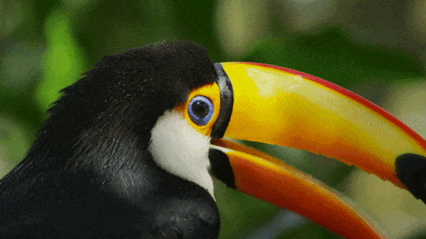

Conheça alguns animais bastante conhecidos e veja algumas GIFs de animais.
| Animal | Grupo | Alimentação | Curiosidade |
|---|---|---|---|
| Cachorro | Mamífero | Onívoro | Possui grande variedade de raças. |
| Gato | Mamífero | Carnívoro | Possui excelente visão com pouca luz. |
| Capivara | Mamífero | Herbívoro | É o maior roedor vivo. |
| Arara-canindé | Ave | Frutos e sementes | Possui plumagem azul e amarela. |
| Tucano | Ave | Frutos e pequenos animais | Seu bico é grande e leve. |

Animal semiaquático encontrado em diferentes regiões da América do Sul.

Um dos grandes predadores encontrados no Brasil.

Ave facilmente reconhecida pelo seu grande bico.